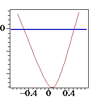
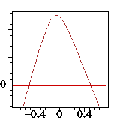
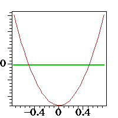
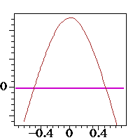

| t1 | (-10.5, 1, -10.5), (.5628568345479573470378601, 1, .5628568345479573470378601), (.56285683454726874605620706, .99999999999822994290647247, .56285683454726874605620706) |
| t2 | (-10.5, -1, 10.5), (1.394218989475, -1, -1.394218989475), (1.3942406911811439954597161, -1.0000237884694881275439271, -1.3942406911811439954597161) |
| t3 | (-9.5, -9.5, .25), (.685825, .685825, .25), (.69121730616063647303519136, .69121730616063647303519136, .26069756890079842876805653) |
| t4 | (9.5, 0, 0), (-.51, 0, 0), (-1.0873912730501133759642956, 0, -.51645811088049333541289247) |
|  |  |  |  | |||
| P1 | P2 | P3 | P4 |
| construction.maple | This is the skeleton file which actually contains the construction. |
| procedures | These are procedures which are necessary for computing the common tangents to 4 triangles. |
| plotH1.maple | This draws the hyperboloid on this page. |
| plane1.maple | Draws the picture in the first plane, P1 |
| plane2.maple | Draws the picture in the second plane, P2 |
| plane3.maple | Draws the picture in the third plane, P3 |
| plane4.maple | Draws the picture in the fourth plane, P4 |
| plotConics.maple | This draws some of the pictures on this page. |
| plane4.www.maple | This is a version of plane4.maple for drawing some more of the pictures. |